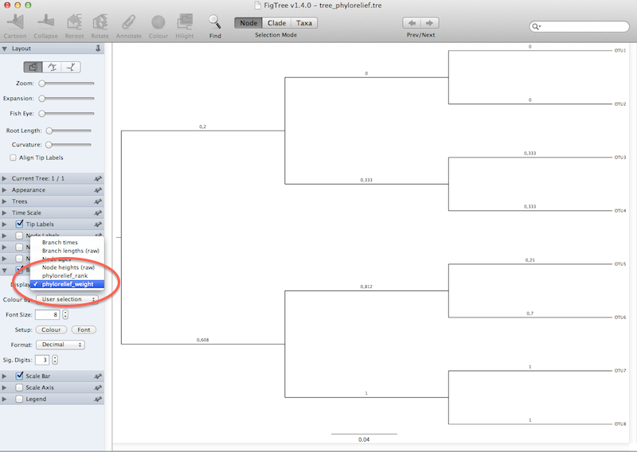

This very simple example is located in the example/ directory. The directory contains three files. A rooted tree in newick format:
(((OTU1:0.1, OTU2:0.1):0.1,(OTU3:0.1, OTU4:0.1):0.1):0.1,((OTU5:0.1, OTU6:0.1):0.1,(OTU7:0.1,OTU8:0.1):0.1):0.1):0.1
An OTU table in tab-delimited format:
OTU SAMPLE1 SAMPLE2 SAMPLE3 SAMPLE4
OTU1 1 1 2 1
OTU2 1 2 1 1
OTU3 1 1 2 2
OTU4 1 1 2 2
OTU5 0 0 3 0
OTU6 0 0 1 4
OTU7 3 3 0 0
OTU8 3 3 0 0
A sample table with sample information:
Sample Status
SAMPLE4 Control
SAMPLE1 Case
SAMPLE3 Control
SAMPLE2 Case
To to run example, open a terminal, go into the example (examples/) folder and run:
$ phylorelief otu_table.txt tree.tre sample_data.txt Status -k 1
Two files, out_phylorelief.txt and tree_phylorelief.tre will be generated. out_phylorelief.txt contains the clade/OTU ranking:
phylorelief_weight kw_stats kw_p kw_padj OTUs
0.9762 3.0000 0.0833 0.1388 OTU7,OTU8
0.7976 3.0000 0.0833 0.1388 OTU5,OTU6
0.2961 3.0000 0.0833 0.1388 OTU3,OTU4
0.0703 1.0000 0.3173 0.3173 OTU2
0.0096 1.0000 0.3173 0.3173 OTU1
tree_phylorelief.tre is the nexus annotated file:
#NEXUS
BEGIN TAXA;
DIMENSIONS NTAX=8;
TAXLABELS
OTU1
OTU2
OTU3
OTU4
OTU5
OTU6
OTU7
OTU8
;
END;
BEGIN TREES;
TREE 0 = [&R] (((OTU1:0.1[&phylorelief_weight=0.00960061443932,phylorelief_rank=5,kw_stat=1.0,kw_p=0.317310507863,kw_padj=0.317310507863],OTU2:0.1[&phylorelief_weight=0.0702764976959,phylorelief_rank=4,kw_stat=1.0,kw_p=0.317310507863,kw_padj=0.317310507863]):0.1[&phylorelief_weight=-0.0464743589744,phylorelief_rank=15,kw_stat=0.0,kw_p=1.0,kw_padj=1.0],(OTU3:0.1[&phylorelief_weight=0.296130952381,phylorelief_rank=15,kw_stat=0.0,kw_p=1.0,kw_padj=1.0],OTU4:0.1[&phylorelief_weight=0.296130952381,phylorelief_rank=15,kw_stat=0.0,kw_p=1.0,kw_padj=1.0]):0.1[&phylorelief_weight=0.296130952381,phylorelief_rank=3,kw_stat=3.0,kw_p=0.0832645166636,kw_padj=0.138774194439]):0.1[&phylorelief_weight=0.133609061135,phylorelief_rank=15,kw_stat=0.0,kw_p=1.0,kw_padj=1.0],((OTU5:0.1[&phylorelief_weight=0.0,phylorelief_rank=15,kw_stat=0.0,kw_p=1.0,kw_padj=1.0],OTU6:0.1[&phylorelief_weight=0.685185185185,phylorelief_rank=15,kw_stat=0.0,kw_p=1.0,kw_padj=1.0]):0.1[&phylorelief_weight=0.797619047619,phylorelief_rank=2,kw_stat=3.0,kw_p=0.0832645166636,kw_padj=0.138774194439],(OTU7:0.1[&phylorelief_weight=0.97619047619,phylorelief_rank=15,kw_stat=0.0,kw_p=1.0,kw_padj=1.0],OTU8:0.1[&phylorelief_weight=0.97619047619,phylorelief_rank=15,kw_stat=0.0,kw_p=1.0,kw_padj=1.0]):0.1[&phylorelief_weight=0.97619047619,phylorelief_rank=1,kw_stat=3.0,kw_p=0.0832645166636,kw_padj=0.138774194439]):0.1[&phylorelief_weight=0.562820512821,phylorelief_rank=15,kw_stat=0.0,kw_p=1.0,kw_padj=1.0]):0.1[&phylorelief_weight=0.260795454545,phylorelief_rank=15,kw_stat=0.0,kw_p=1.0,kw_padj=1.0];
END;
Now you can navigate the annotated tree with an external progam such as FigTree:
